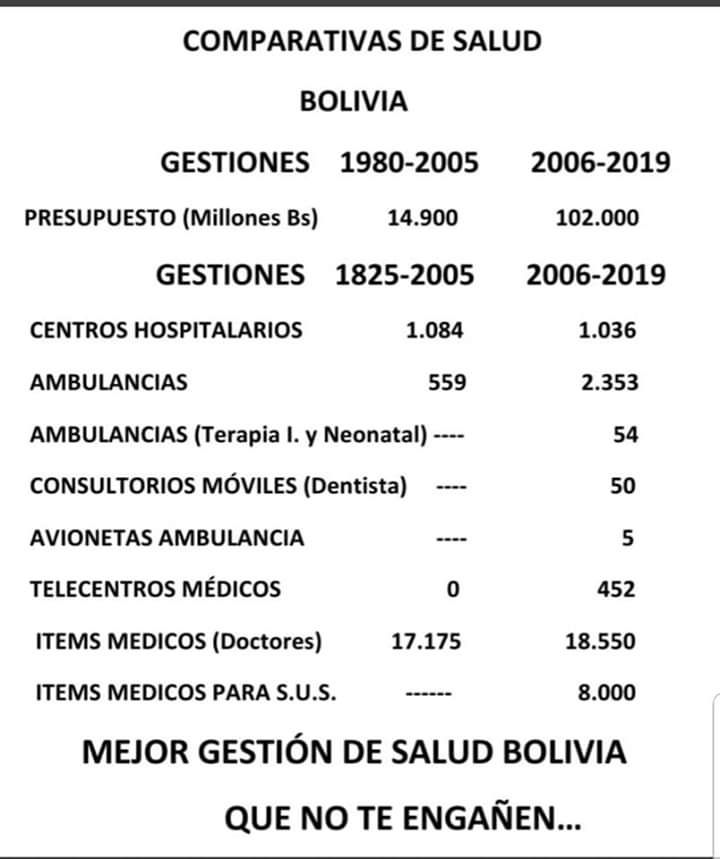

Respuestas sencillas a preguntas tontas

El documento es un poco extenso pero creo que vale la pena leerlo ya que aclara muchas preguntas realizadas en medios de comunicación.
Van 3 entrevistas a #LuchoArce que he logrado escuchar y ver: 2 en televisión, en PAT en el programa NO MENTIRAS de Jimena Antelo y en Red UNO donde fueron los corresponsales de cada departamento que realizaron preguntas y por ultimo una en radio ERBOL.
Debo destacar lo miserable en cuanto a las entrevistas de los 3 medios, pero rescato más al periodista de ERBOL ya que fue el que permitió que Lucho pueda exponer más detalladamente las respuestas y además programa de gobierno (que en realidad es lo poco o nulo que preguntan los periodistas).
La finalidad del presente artículo radica en exponer las preguntas risorias, llegando a lo estupido de cada una de ellas y a la vez dar una respuesta, en algunos casos Lucho las ha expresado muy bien pero no han dejado completar la respuesta, ya que la supuesta frase de que “el tiempo en televisión es oro” limita ampliar y colocar en contexto las respuestas que el candidato por el MAS IPSP (osea candidato del partido en el cual militó) otorga a periodistas que se deben al dueño del medio de comunicación.
Periodista: ¿Qué hizo el MAS en 14 años por la salud?
Respuesta: En primer lugar el MAS lo que hizo a través de las autonomías (autonomías por las cuales votaron todos y estuvieron de acuerdo) y mediante la ley 3131 fue otorgar la posibilidad de que las ETAS también puedan utilizar sus recursos en salud para poder crear ITEMS para médicos, comprar insumos y poder hacer infraestructura para salud (hospitales de 1er y 2do nivel caso de municipios y hospitales de 3er nivel en caso de gobernaciones) en este caso hay un ejemplo vergonzoso y es el caso del alcalde de cbba el Sr. Joe María Leyes el cual mediante dicha normativa en lugar de crear ítems de médicos, uso esos recursos para crear ítems para personal administrativo.
Pese a esas autonomías y normativa el Gobierno Central a la cabeza de Evo Morales decide invertir en salud como nunca antes en la historia republicana se había hecho, de 14.900 millones de bolivianos que se invirtió entre los años 1980 al 2005 se invertio en salud 102.000 millones de bolivianos en el periodo 2006 al 2019, en pocas se invirtió 6 veces más en 14 años que en 25 años de neoliberalismo. Para ver en que se invirtió ver tabla adjunta 
Prueba de esos logros están algunos datos interesantes como ser la disminución de la tasa de mortalidad materna infantil.
Los Tiempos – 19/12/2017
teleSUR – Publicado 19/01/2018
el Periódico – 12/06/2019
O como ser la elevación de la esperanza de vida
Página Siete – 15/06/2017
El Deber – 06/07/2019
Como lograrán observar son fuentes de medios de comunicación impresos y ninguno corresponde a una agencia dependiente del Gobierno Central que en ese entonces estaba a cargo del MAS. Esos datos ya nos hablan de logros de salud y que son directamente proporcionales con las políticas asumidas por el gobierno en cuanto a salud.
Ante estos ejemplos y demostrando cuanto se incrementó el presupuesto en salud y las compras e insumos otorgados, se puede decir que el MAS hizo mucho en cuanto salud durante su gobierno, efectivamente se puede hacer más cosas pero la coyuntura era diferente en cuanto a la actual. Ningún sistema de salud estaba preparado para la pandemia, pero pese a ello y eso es lo que reclamamos desde el MAS es que se pudo hacer una gestión mejor que la que realiza y realizó el actual gobierno de facto, para dicho ejemplo es bueno tomar referencia a Cuba y Venezuela, países satanizados por el actual gobierno, bloqueados económicamente pero pese a ello demostraron una excelente gestión de la pandemia.
Periodista: ¿Por qué hicieron más “canchitas” que hospitales?
Respuesta: Nuevamente es bueno referirnos a lo de las autonomías del anterior punto y además señalar lo siguiente: las canchas son proyectos que se ejecutaban a través del programa “Bolivia Cambia Evo Cumple”, esos proyectos eran presentados por los municipios y gobernaciones para posteriormente ser analizados y aprobados, en pocas, las canchas eran solicitadas por parte de autoridades sub nacionales, no eran iniciativa del Gobierno Central, lo segundo no podemos hablar que una cancha es igual a un hospital, deben tener condiciones ( vias de acceso al hospital, agua potable, electricidad entre algunos) y esos proyectos y siendo muy críticos pocas autoridades y empresas podían realizarlos. ( lo cual nos hace un llamado de atención a nuestras universidades autonomas, no exisitan muchos profesionales capaces de construir hospitales de 3er y 4to nivel, por ello se citaba a licitaciones internacionales y por otro lado si podias construir el hospital con que profesionales especialistas en salud ibas a dar atención a dichos hospirales) por tanto no se puede hablar de construir hospitales como hacer canchas y pese a ello se realizaron varios hospitales en la gestión de Evo Morales. ( adjunto cuadro informativo)


Periodista: ¿señalan que fueron un gobierno corrupto, que dicen al respecto?
Respuesta: En el gobierno del MAS se instauraron los mecanismos para transparentar la gestión pública, es gracias a esos mecanismos que se logra detectar sobreprecios o compras que hacen daño económico al estado, como el caso de los Respiradores que involucra al yerno de Jeanine Añez, compras de equipo de represión por parte de Min Gobierno y Defensa con sobreprecio, compra de equipos de bioseguridad con sobreprecio etc, además creamos el Ministerio de Transparecia, por el cual han sido procesados muchas autoridades y servidores públicos por actos de corrupción (la mayoría de los procesados son personas que decían ser del MAS) y en muy pocos casos se ha procesado gente de la oposición, como el sr Leyes que incluso su misma gente comprobó que es alguien corrupto, con esta afirmación se desmienten 2 cosas: la primera que existe una persecusion política hacia autoridades opositoras y la segunda que somos cómplices de corrupción, señalar que para que se sancione actos de corrupción deben estar probados, pueden existir muchos “supuestos” casos de corrupción, pero si no se demuestran solo son eso… “supuestos” y tengamos presente que si fueran tantos como afirman los golpistas… en estos 7 meses de gobierno porque no los procesaron…
Periodista: ¿hubo golpe o fraude?
Respuesta: en este caso hay que aceptar errores, se otorgo demasiado poder a un organismo internacional seriamente cuestionado por posturas en contra de los gobiernos progresistas y jamás se invitó a otros organismos a la par de la OEA para tener 3 o 4 estudios para determinar si existió o no fraude. Esto por un lado, por otro lado ser autocríticos, el compañero Evo debió dar un paso al costado en la repostulación, solo hasta ahora él acepta que existió un error en tomar esa decisión, pero siendo analíticos, Evo Morales debía cumplir un mandato hasta el 22 de enero del 2020, ya que fue electo el 2014 con más del 60 porciento de votos, cualquier acción que acelere dejar el mandato por el cual fue electo hasta esa fecha, aunque sean sugerencias de militares y policías (que son entidades que mediante su reglamento se deben al primer mandatario y solo deben cumplir órdenes y no sugerir cosas), por último siguiendo la autocrítica teníamos presidencia y vicepresidencias en ambas cámaras, pese a la violencia, amenazas, u órdenes de alguien era una labor patriótica de dichas autoridades asumir el rol y no dejar en manos de ese 4% que fue electo el 2014 (bancada a la que pertenece Jeanine Añez) el poder de todo un estado y que tiene las consecuencias actuales. (muchos dirán que no estoy en los zapatos de dichas personas, es verdad pero tengo familiares que pese a las torturas hacia ellos y sus familias, resistieron valientemente esos actos y no hicieron delación de sus compañeros y asumieron su rol revolucionario durante golpe de estado y dictaduras de los años 70)
Por último deja mucho entredicho los estudios realizados por otras entidades que ponen en duda la veracidad del estudio realizado por la OEA
CNN – 10/06/2020
El País – 01/03/2020
Periodista: ¿Si llega a la presidencia… quien va gobernar… Evo o usted?
Respuesta: Evo es una persona, Luis Arce es otra, coincidimos en la visión de País, una Bolivia fuerte, líder en crecimiento económico, industrializada con mucho porvenir y logros, somos un país que demostró que puede estar a la par en muchas cosas como las grandes metrópolis (teleféricos, planta de urea, premios a mejor destino turístico, Dakar, misicuni, satélite propio, empresas aeronáuticas propias, hospitales de 3er nivel entre algunas) podemos continuar ese sueño y dejar de lado esa mediocridad que tienen otros candidatos y ex gobernantes y gobernantes… alegrandose de ser segundos en las encuestas… Bolivia logro inclusión, puso en alto su nombre por 14 años, es tiempo de recuperarlo, no como Evo Morales sino como Masistas y más aun como Bolvianos que ahora somos reconocidos en todo el mundo gracias a las decisiones políticas acertadas en los años que gobernó el MAS.